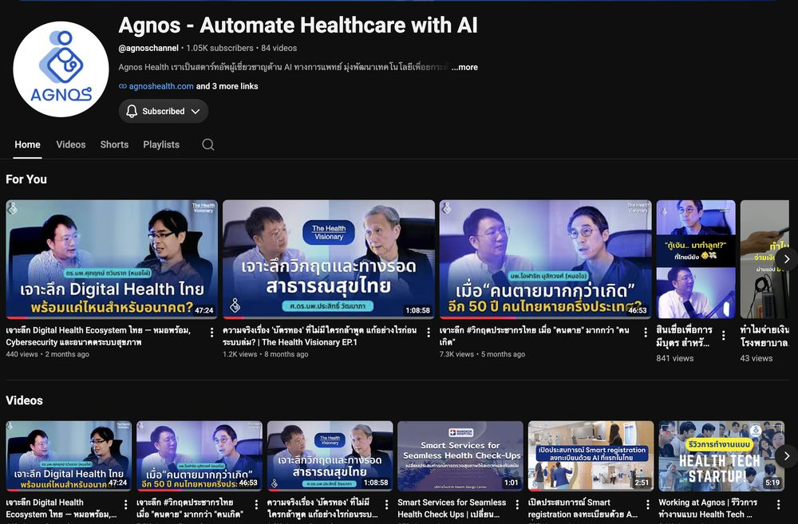
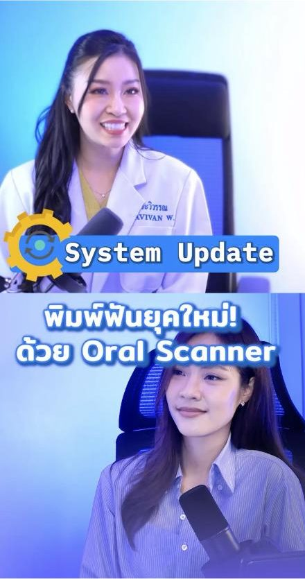
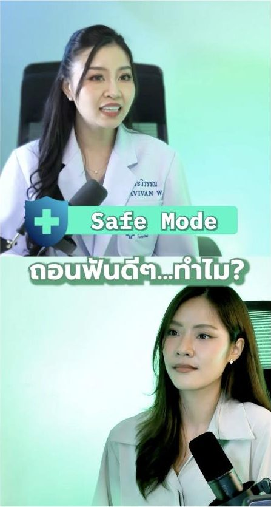
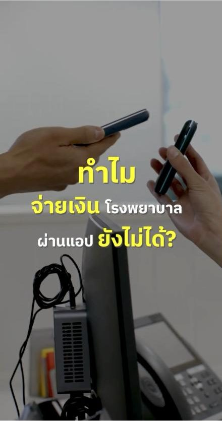
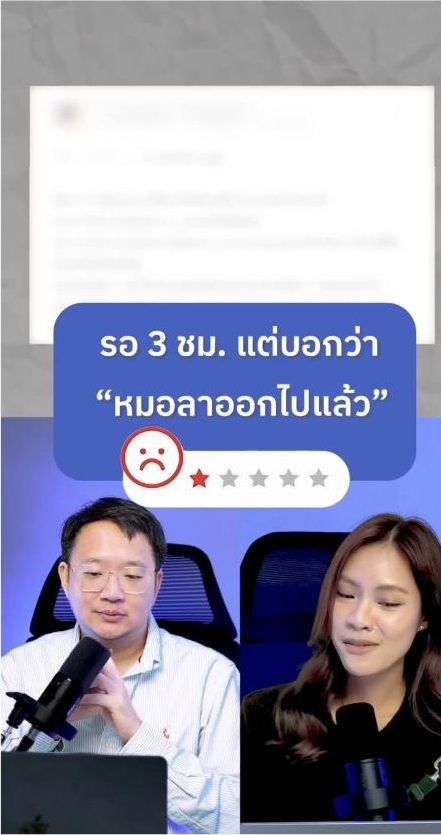
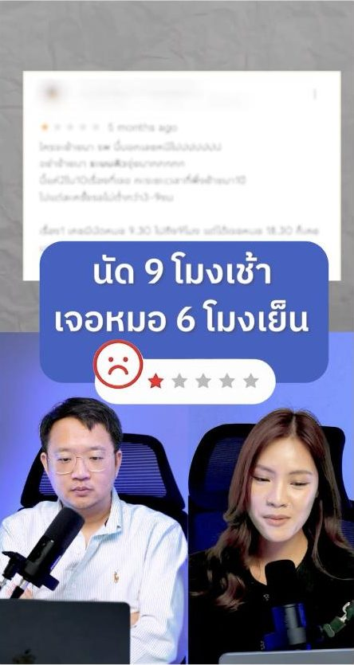

01 / 04
จากการไล่ล่าลีด
สู่การสร้างความเชื่อใจระดับองค์กร
Agnos Health · Content Strategy & Positioning

ซีรีส์ The Health Visionary และคลิปสัมภาษณ์ผู้เชี่ยวชาญบนช่อง Agnos Health
RoleContent Strategy · Positioning · KOL Partnership Lead
ทำงานกับCEO · แพทย์เฉพาะทาง · ทีมตัดต่อ · KOL & ผู้เชี่ยวชาญในวงการ
ช่องทางTikTok · YouTube · Facebook · LinkedIn
บทบาทและความเป็นเจ้าของงาน
- กำหนดกลยุทธ์การผลิตและเผยแพร่คอนเทนต์แบบ End-to-End ข้ามช่องทางโซเชียลมีเดียทั้งหมด
- เป็นผู้นำในการเขียนบท (Scriptwriting) เพื่อรักษาอัตราการดู โดยแปลงข้อมูลเชิงการแพทย์ที่ซับซ้อนให้กลายเป็นประเด็นทางสังคมที่ผู้คนอินและเข้าถึงได้
- บริหารจัดการความร่วมมือกับแพทย์เฉพาะทาง พาร์ทเนอร์ KOL และลงมือทำวิจัยเสียงจากลูกค้า (Voice-of-Customer) เพื่อกำหนดจุดยืนของแบรนด์
- สร้างระบบการเติบโตแบบออร์แกนิก 100% โดยไม่ต้องพึ่งพางบโฆษณา (Zero Paid Ads)
โจทย์
Agnos ปิดดีลขายระบบให้กับโรงพยาบาลระดับหลักล้านบาท ซึ่งเป็นธุรกิจ B2B ที่มีความซับซ้อนและมีวงจรการขายที่ยาวนาน
การตัดสินใจซื้อประเภทนี้ขึ้นอยู่กับ "ความเชื่อใจก่อนที่จะเกิดการซื้อขาย"
ในขณะนั้น แรงกดดันทางธุรกิจต่างพากันโน้มเอียงไปทาง Performance Marketing ทั่วไป — อยากให้วิ่งไล่ล่าหาลีดระยะสั้น
เน้นคลิก conversion เร็วๆ และโฆษณาขายฟีเจอร์ผลิตภัณฑ์ตรงๆ ซึ่งไม่เหมาะกับธุรกิจลักษณะนี้เลย
ความท้าทายคือการดึงทีมให้ออกมาจาก "กับดักการหาลีดระยะสั้น" แล้วหันมาสร้างสินทรัพย์แห่งความน่าเชื่อถือที่ยั่งยืน
แนวทาง
ฉันตัดสินใจเลือกสร้างกลยุทธ์บนรากฐานของ ความเชื่อใจ (Trust) และการสร้างการรับรู้ (Awareness)
แทนที่จะเป็นการวิ่งหาลีดแบบเร่งรีบ
เหตุผลเบื้องหลัง: ในธุรกิจ B2B ราคาสูง การสร้างการเข้าถึงในระดับบนสุดของกรวยการขาย (Top-of-Funnel) ต้องทำเพื่อเป้าหมายเชิงกลยุทธ์
นั่นคือการสร้างพื้นที่ในใจผู้คน (Ecosystem Awareness) เพื่อที่ว่าเมื่อทีมขายเข้าไปเจรจากับผู้บริหารโรงพยาบาล
แบรนด์ของเราจะดูคุ้นเคยและน่านับถืออยู่แล้ว แทนที่จะต้องอธิบายแบรนด์ใหม่จากศูนย์
เราจึงเปลี่ยนมุมมองคอนเทนต์ให้พุ่งเป้าไปที่ "ประเด็นปัญหาสังคมและสุขภาพมหภาคที่คนใส่ใจ แม้วันนั้นเขายังไม่ป่วยก็ตาม"
เช่น วิกฤตเด็กเกิดน้อยในประเทศไทย และการเปลี่ยนแปลงโครงสร้างประชากร แล้วค่อยร้อยเรียงโยงกลับมาสู่เรื่องความคุ้มค่าของเทคโนโลยีในโรงพยาบาลอย่างแนบเนียน
สิ่งที่สร้างขึ้น
01 End-to-End Content Translation Engine
ลงมือสัมภาษณ์เชิงลึกกับแพทย์ผู้เชี่ยวชาญและบุคลากรทางการแพทย์ นานกว่า 45 นาทีต่อครั้ง แล้วดึงข้อมูลทางคลินิกและสถิติประชากรที่ซับซ้อนออกมาปั้นใหม่ด้วย Psychological Framing ตัดทอนให้กลายเป็นคลิปสั้นกระชับที่ขยี้ประเด็นสังคม เช่น ทำไมคนไทยรุ่นใหม่ถึงไม่อยากมีลูก
02 Voice-of-Customer (VoC) Research
โทรศัพท์และสัมภาษณ์ลูกค้าและผู้ใช้งานบนแพลตฟอร์มด้วยตัวเอง เพื่อค้นหาความอึดอัด (Friction) ความกังวล และความต้องการที่ซ่อนอยู่ แล้วนำ insight ดิบๆ เหล่านี้มาปรับทิศทางหัวข้อคอนเทนต์ จากที่พูดแต่ฟีเจอร์เทคโนโลยี ให้กลายเป็นเรื่องการแก้ความเหนื่อยล้าของคนหน้างาน
03 Strategic KOL & Specialist Partnerships
ร่วมมือกับแพทย์เฉพาะทางและ KOL สายสุขภาพที่น่าเชื่อถือและมีเป้าหมายตรงกับ Agnos คัดเลือกพันธมิตรจากความเชี่ยวชาญจริงและการยอมรับในวงการ โดยวัดผลจากความลึกของการมีส่วนร่วม (Engagement Depth) คอมเมนต์เชิงคุณภาพ และยอดแชร์ แทนที่จะมองแค่ยอดวิวผิวเผิน



ดำเนินรายการสัมภาษณ์แพทย์เฉพาะทางเองหน้ากล้อง — ซีรีส์ HealthOS เปลี่ยนความรู้การแพทย์ให้เข้าถึงง่าย
04 Unified Brand Positioning Framework
สรุปจุดยืนของ Agnos ออกมาเป็นประโยคเดียวที่ชัดเจน: "Agnos ไม่ใช่แค่บริษัทขายซอฟต์แวร์ แต่เป็นเพื่อนร่วมทีมทางการแพทย์ที่ช่วยนำความชัดเจนและประสิทธิภาพมาสู่การทำงานหน้างานจริง"



ตัวอย่างซีรีส์คลิปสั้นที่หยิบ pain point จริงของคนไข้มาเล่า — วางประเด็นก่อนโปรดักชัน
ผลลัพธ์และชิ้นงาน
- 60,893 views ในวันเดียว และ 190,126 views ในเดือนเดียว (ก.พ.) จากคลิปประเด็นสังคม-สุขภาพชิ้นเดียว
- 84% ของยอดวิวมาจาก content pillar "โครงสร้างประชากรและเด็กเกิดน้อย" — 5 คลิป ทำได้ 347,787 views ขณะที่อีก 10 คลิปรวมกันได้ 65,299 views เป็นหลักฐานว่าการเลือกประเด็นสำคัญกว่าจำนวนคลิปที่ปล่อย
- 93% ของผู้ชมอยู่ในประเทศไทย — ยอดวิวไม่ได้มาจากทราฟฟิกต่างประเทศที่ไม่ใช่กลุ่มเป้าหมาย
- ผู้ชมที่กลับมาดูซ้ำ 55,976 คน (15%) จากผู้ชมทั้งหมด 371,139 คน — สร้างการจดจำแบรนด์ ไม่ใช่ไวรัลครั้งเดียวจบ
- 13,748 likes · 905 shares · engagement rate 3.4% — ทั้งหมดนี้เกิดขึ้นในช่วง 21 ม.ค. – 31 ก.ค. บนช่องที่เพิ่งตั้งใหม่ ซึ่งโตจาก 4 เป็น 928 followers ในช่วงเดียวกัน
- Qualified Enterprise Inbounds — การสร้างความน่าเชื่อถือในวงกว้างทำให้กลุ่มเป้าหมายเปิดใจ ส่งผลให้การเปิดดีลกับพาร์ทเนอร์โรงพยาบาลราบรื่นและมีคุณภาพสูงขึ้น
บทสรุปภาพรวม
โปรเจกต์นี้พิสูจน์ว่า คอนเทนต์มาร์เก็ตติ้งในอุตสาหกรรมที่ซับซ้อนสูง ต้องขับเคลื่อนด้วยตรรกะทางธุรกิจและจิตวิทยาของมนุษย์
ไม่ใช่การวิ่งตามกระแสชั่วครั้งชั่วคราว การปฏิเสธที่จะวิ่งตามลีดตื้นๆ แล้วหันมาโฟกัสกับการสร้างความไว้วางใจเชิงระบบ
ทำให้ Agnos กลายเป็นผู้นำทางความคิด (Thought Leader) ที่ได้รับการยอมรับในวงการ HealthTech ไทย
โปรเจกต์นี้แสดงให้เห็นวิธีทำงานของฉันในระดับ Marketing Team Lead: การกล้าปฏิเสธ vanity metrics
เพื่อจัดวางแผนคอนเทนต์ให้สอดคล้องกับโมเดลธุรกิจ B2B มูลค่าหลักล้าน พร้อมสร้างระบบสื่อสารที่เปลี่ยนเรื่องยากให้กลายเป็นความเชื่อใจของแบรนด์อย่างยั่งยืน
สิ่งที่ได้เรียนรู้
- Trust ชนะ Lead-Gen ในธุรกิจ B2B ที่ซับซ้อน: การเร่งปิดการขายหรือเก็บลีดเร็วเกินไปสร้างแรงต้าน การสร้างความน่าเชื่อถือก่อนทำให้การคุยธุรกิจง่ายขึ้น
- Content คือการแปล ไม่ใช่การโปรโมท: ความรู้ของผู้เชี่ยวชาญจะไร้ค่าหากเล่าแบบน่าเบื่อ แต่ทรงพลังทันทีเมื่อถูกแปลผ่านความเข้าใจและบริบททางสังคมที่คนเข้าถึงได้
- เสียงลูกค้าตัวจริงขับเคลื่อนกลยุทธ์: การนั่งคิดในห้องแอร์ให้แค่ทฤษฎี แต่การต่อสายคุยกับลูกค้าจริงมอบ "คีย์เวิร์ดทางจิตวิทยา" ที่ทำให้คอนเทนต์โดนใจอย่างแท้จริง
01 / 04
From Chasing Leads
to Building Enterprise-Level Trust
Agnos Health · Content Strategy & Positioning
The Health Visionary series and expert-interview clips on the Agnos Health channel
RoleContent Strategy · Positioning · KOL Partnership Lead
Worked withCEO · Specialist physicians · Video team · KOLs & industry experts
ChannelsTikTok · YouTube · Facebook · LinkedIn
Role & Ownership
- Defined the end-to-end content production and distribution strategy across all social channels
- Led scriptwriting to hold watch-through rate, translating complex clinical information into social issues people actually care about
- Managed partnerships with specialist physicians and KOLs, and ran voice-of-customer research to define brand positioning
- Built a 100% organic growth engine with zero paid ad spend
Challenge
Agnos closes hospital-system deals worth millions of baht — complex B2B with a long sales cycle. This kind of
purchase runs on trust before the transaction.
At the time, business pressure pulled toward conventional performance marketing — chase short-term leads, optimize
for fast-click conversion, advertise product features directly. None of that fits this business. The challenge was
to pull the team out of the short-term lead trap and toward building a durable credibility asset instead.
Approach
I chose to build the strategy on trust and awareness rather than a frantic lead hunt.
The reasoning: in high-ticket B2B, top-of-funnel reach serves a strategic goal — building ecosystem awareness, so
that when sales sits down with a hospital executive, the brand already feels familiar and respected, instead of
having to explain itself from zero.
So we pointed content at "macro social and health issues people care about even when they aren't sick yet" — Thailand's
declining birth rate, shifting population structure — then wove it back, seamlessly, to the value of technology
inside hospitals.
What I Built
01 End-to-End Content Translation Engine
Ran 45+ minute in-depth interviews with specialist doctors and medical staff, then reshaped complex clinical and demographic data with psychological framing into tight short clips that hit a social nerve — like why young Thais don't want children.
02 Voice-of-Customer (VoC) Research
Called and interviewed customers and platform users myself to find the hidden friction, worries, and needs — then used that raw insight to steer content topics away from tech features and toward relieving the exhaustion of people on the floor.
03 Strategic KOL & Specialist Partnerships
Partnered with credible health-space specialists and KOLs aligned with Agnos, chosen for real expertise and industry standing — measuring success by engagement depth, quality comments, and shares rather than surface view counts.
Hosting expert-interview clips on camera myself — the HealthOS series, making medical knowledge accessible
04 Unified Brand Positioning Framework
Distilled Agnos's position into one clear sentence: "Agnos isn't just a software vendor — it's a medical teammate that brings clarity and efficiency to real frontline workflows."
A short-form series built on patients' real pain points — topic chosen before production
Impact & Deliverables
- 60,893 views in a single day and 190,126 views in one month (February) off one social-health clip
- 84% of all views came from the "demographics & declining birth rate" pillar — 5 clips produced 347,787 views while the other 10 combined produced 65,299. Evidence that topic selection beats publishing volume
- 93% of viewers were in Thailand — the reach wasn't inflated by off-target international traffic
- 55,976 returning viewers (15%) out of 371,139 total — brand recall, not a one-off viral spike
- 13,748 likes · 905 shares · 3.4% engagement rate — all of it between 21 Jan and 31 Jul on a brand-new channel that grew from 4 to 928 followers over the same window
- Qualified enterprise inbounds — broad credibility made target audiences more receptive, so opening deals with hospital partners became smoother and higher-quality
Outcome
This project proved that content marketing in a highly complex industry has to be driven by business logic and human
psychology — not by chasing trends. Refusing shallow leads and focusing on systematic trust made Agnos a recognized
thought leader in Thai HealthTech.
This demonstrates how I operate at Marketing Team Lead level: the willingness to reject vanity metrics and align the
content plan with a million-baht B2B business model, building a communication system that turns hard topics into
durable brand trust.
Key Learnings
- Trust outperforms lead-gen in complex B2B: closing or collecting leads too fast creates resistance; building credibility first makes the business conversation easy.
- Content is translation, not promotion: expert knowledge is worthless told boringly, but powerful the moment it's translated through empathy and social context people can reach.
- Direct customer voice drives strategy: thinking in a room gives theory; calling real customers gives the "psychological keywords" that make content genuinely land.